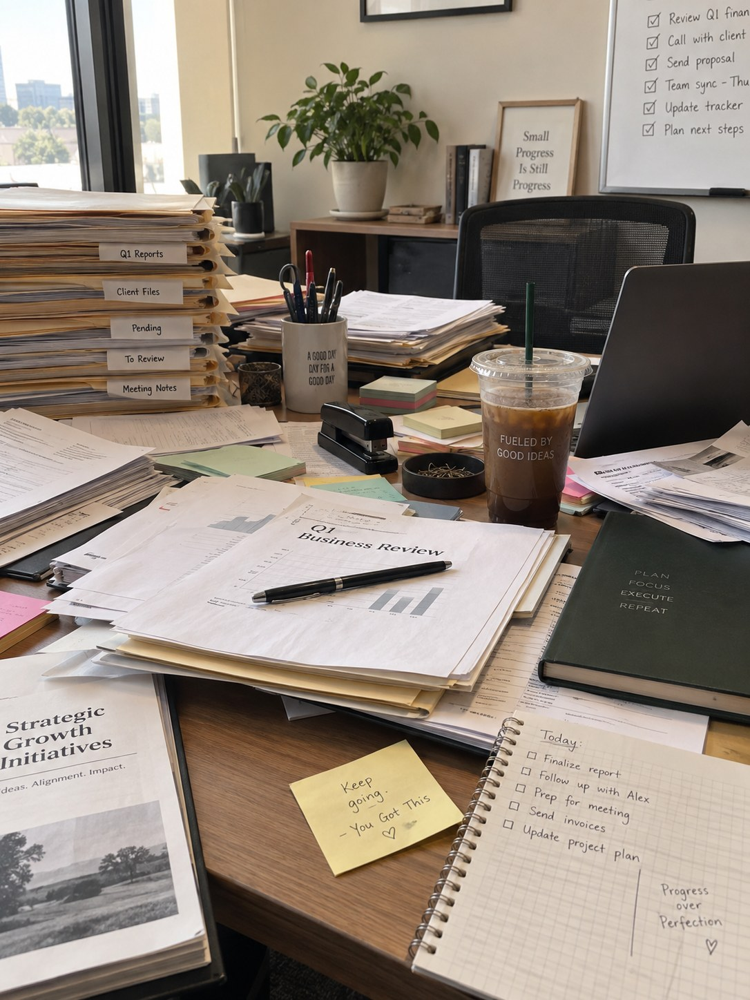
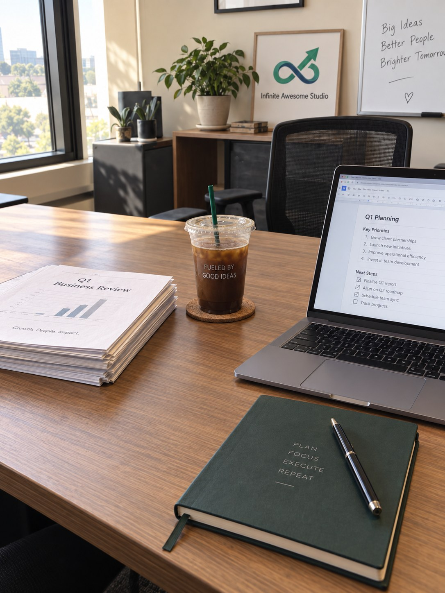
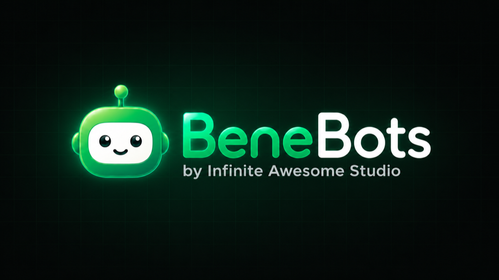

Most Companies
Bought the AI.
Almost Nobody Uses It.
You’re already paying for Copilot, or ChatGPT, or Gemini. Somebody signed off on the licenses months ago. So is anyone actually using it? Are you? I get your team using the AI you already bought, on the work that is eating their week. No new software, no procurement, no six-week rollout.
25 years in employee benefits, the most paperwork-heavy and most regulated corner of business there is. Protected health information in every file, deadlines with real penalties attached. If AI can be made safe and useful under those rules, it will hold up under yours.
The same admin work has been piling up in every business.
Whether you run an HR department, manage operations or run a small business, the same pattern always shows up: work that could be automated, still being done by hand. The same reports rebuilt every quarter. The same questions answered over and over.
I’ve watched it from both sides, inside a major carrier, running operations for large Fortune 500 corporations and consulting to hundreds of business owners big and small. The problems don’t change. Neither does the fix.


Pick One Process. Two Weeks.
One solid answer at the end.
Not a strategy deck and not a six-week rollout. One process you already run, rebuilt on the licenses you already pay for, run by your own people and measured against the way you do it today.
Scope
A 45-minute call. We pick one process, agree what good looks like and you name the person who signs off on the output. You get a one-page scope back inside 72 hours. If it turns out there’s nothing here worth two weeks, I’ll tell you on the call.
Pilot
Built on the licenses you already own. No new software and nothing to procure. Days three to ten it’s your team running it on their own real work, because a tool nobody adopts isn’t a result.
Finding
One page, delivered live rather than emailed. Hours recovered measured against the baseline we set on day zero, what’s worth keeping and what to drop. Yours to keep either way.
About half the time, the answer is no.
That’s the outcome most people won’t put in writing before they start. If the process has no source of truth, was never really defined or your licensing blocks the part that actually matters, the finding says so and tells you which one it was. A no that costs you two weeks is a great deal cheaper than a yes that costs you a year.
Two numbers stay at zero.
If either one moves, the pilot has failed no matter what else it saved. These are written into the scope before anything is built.
The scope call is free. The pilot itself is a single fixed fee, agreed in writing before anything gets built. No hourly billing, no change orders and no surprise second phase. We talk about the number on the call, once we both know what the process actually is.

I’m not an AI person who wandered into benefits.
I’m a benefits person who found a better tool.
Here’s what’s possible with tools you already have.
I learned this inside a major carrier and have been teaching it for years. The tasks change by industry. The playbook doesn’t.
When I worked inside a major carrier, I saw how much time we spent drafting the same letters and reports. Copilot does that automatically.
Best for: COBRA letters, stewardship summaries, benefit summaries
Same playbook elsewhere: quotes, proposals, recurring client letters
Get the prompts →Benefit analysis requires nuanced thinking. Claude excels at that.
Best for: Deep plan analysis, plan comparisons, compliance review
Same playbook elsewhere: contract review, vendor comparisons, policy summaries
Get the prompts →During open enrollment, everyone needs content. ChatGPT is your content factory.
Best for: OE email sequences, employee FAQs, announcement drafts
Same playbook elsewhere: social posts, onboarding docs, customer follow-ups
Get the prompts →All free or <$20/mo. Try them today.
The work behind the conversations.
Some of this is for a company with licenses nobody uses. Some of it is for the employee trying to. All of it came out of the same problem: work that should not take this long.
I turn the most confusing topic in business into something anyone gets.
The BeneBots are proof of the method. They are a cast of plain-English explainers built to make complex benefits and HR topics easier to teach, remember and reuse. The same thinking behind The Infinity Desk, pointed at the work benefits and HR teams live in. General education only, human-reviewed, never advice.
"Plain-English explainers. Human-reviewed drafts. Built from approved source material."
BeneBots help benefits and HR teams turn complex topics into clear education: employee FAQ content, open enrollment explainers, general plan-comparison explainers, leave-process walkthroughs and report drafts for leadership. Six characters, plain English, built from approved source material and reviewed by a human before anything ships. General education only, never advice.
